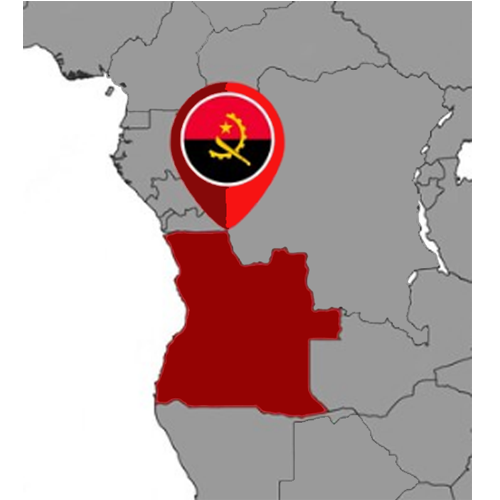

Overview
Purpose
[This website will focus on teaching people about Angola, it will allow them to see real images about this African country too.]
Audience
[This website welcome everyone who love to travel to Africa and get to know it’s culture, and also for those who want to learn about the mother land.]
Branding
Website Logo
Style Guide
Color Palette
Palette URL: https://coolors.co/ff0000-ffd800-003153-ffffff| Primary | Secondary | Accent 1 | Accent 2 |
|---|---|---|---|
| [#ff0000] | [#ffd800] | [#003153] | [ffffff] |
Typography
Heading Font: ['Signika Negative', sans-serif;]
Paragraph Font: ['GFS Didot', serif;]
Normal paragraph example
Angola, officially the Republic of Angola (Portuguese: República de Angola, Kongo: Repubilika ya Ngola), is a country located on the west-central coast of Southern Africa. It is the second-largest Lusophone (Portuguese-speaking) country in both total area and population (behind Brazil in both cases), and is the seventh-largest country in Africa. It is bordered by Namibia to the south, the Democratic Republic of the Congo to the north, Zambia to the east, and the Atlantic Ocean to the west. Angola has an exclave province, the province of Cabinda, that borders the Republic of the Congo and the Democratic Republic of the Congo. The capital and most populous city is Luanda.
Colored paragraph example
Angola has been inhabited since the Paleolithic Age. Its formation as a nation-state originates from Portuguese colonisation, which initially began with coastal settlements and trading posts founded in the 16th century. In the 19th century, European settlers gradually began to establish themselves in the interior. The Portuguese colony that became Angola did not have its present borders until the early 20th century, owing to resistance by native groups such as the Cuamato, the Kwanyama and the Mbunda.
Navigation
Site Map
Content
Home page
Brief history of Angola Angola, officially the Republic of Angola, is a country on the west coast of Africa, whose main territory is bordered to the north and northeast by the Democratic Republic of Congo, to the east by Zambia, to the south by Namibia and to the west by the Atlantic Ocean. It also includes the exclave of Cabinda, through which it borders the Republic of Congo to the north. In addition to the already mentioned neighbors, Angola is the closest country to the British colony of Santa Helena. The Portuguese were present since the 15th century in some parts of what is now the territory of Angola, interacting in different ways with the native peoples, mainly with the inhabitants of the coast. The delimitation of the territory only happened at the beginning of the 20th century. The first European to arrive in Angola was the Portuguese explorer Diogo Cão. Angola was a Portuguese colony that only covered the current territory of the country in the 19th century and the "effective occupation", as determined by the Berlin Conference in 1884, only happened in the 1920s. Independence from Portuguese rule was achieved in 1975, after a war of independence. Brazil was the first country to recognize the country's independence, back in 1975. After independence, Angola was the scene of a long and devastating civil war, from 1975 to 2002, mainly between the MPLA and UNITA. Despite the internal conflict, areas such as Baixa de Cassanje maintained their regional monarchical systems. In 2000, a peace agreement was signed with the Front for the Liberation of the Enclave of Cabinda, a guerrilla organization fighting for the secession of Cabinda and which is still active. Approximately 65% of Angola's oil comes from the Cabinda region. The country has vast natural resources, such as large reserves of minerals and oil and, since 1990, its economy has shown growth rates that are among the highest in the world, especially after the end of the civil war. However, Angolan living standards remain low and around 70% of the population lives on less than two dollars a day, while life expectancy and infant mortality rates in the country remain among the worst in the world, in addition to the prominent presence of economic inequality, as most of the country's wealth is concentrated in a disproportionately small part of the population. Angola is also considered one of the least developed countries on the planet according to the United Nations (UN) and one of the most corrupt in the world by Transparency International.
Images for the Home page


Major cities
Luanda is the capital and largest city of Angola. Located on the coast of the Atlantic Ocean, it is also the main port and economic center of the country. According to a statistics done In 2018, it had a population of approximately 2.5 million inhabitants, which makes it the seventh most populous Portuguese-speaking city in the world, behind São Paulo, Rio de Janeiro, Brasília, Salvador, Fortaleza and Belo Horizonte, all in Brazil and, in fact, the second most populous Portuguese-speaking capital in the world, ahead of Maputo and Lisbon. If considered the Metropolitan Region of Luanda, in 2015 its population would be almost 4.5 million inhabitants. The industries present in the city include the transformation of agricultural products, beverage production, textiles, cement, recently car assembly plants, building materials, plastics, metallurgy, cigarettes and shoes. Oil, extracted in the vicinity, is refined in the city, although the refinery was damaged several times during the civil war that ravaged the country between 1975 and 2002. Luanda has an excellent natural port, the main exports being coffee, cotton, sugar, diamonds, iron, salt, copper, gold, wheat and corn. With an extremely cosmopolitan profile, the inhabitants of Luanda are, for the most part, members of the Ambundu, Congo and Ovimbundu ethnic groups, with relevant fractions of all Angolan ethnic origins. There is a population of European origin, consisting mainly of Portuguese, estimated at around 400,000 people. There is also an important Chinese community estimated at 67,000. The official and most widely spoken language is Portuguese, with several African languages also spoken. Luanda was the main city to host the 2010 Africa Cup of Nations games. Lobito is a city and municipality in the province of Benguela, in Angola, located on the coast of the Atlantic Ocean. According to population projections for 2018, prepared by the National Institute of Statistics, it has a population of 436,467 inhabitants and a territorial area of 3,648 km², making it the second most populous municipality in the province, second only to Benguela. It is limited to the north by the municipality of Sumbe, to the east by the municipality of Bocoio, to the south by the municipality of Catumbela and to the west by the Atlantic Ocean. One of the nation's logistical hubs, it has its links in the important port and rail terminals, as well as in the continental road network, which connect it to the rest of the country, taking it to the east coast of Africa. Benguela is a city and municipality, capital of the province of Benguela, in western Angola, composed only of the seat commune, which is organized into six zones. According to population projections for 2018, prepared by the National Institute of Statistics, it has a population of 623,777 inhabitants and a land area of 2,100 km², making it the most populous municipality in the province and the tenth most populous in the nation. It is limited to the north by the municipality of Catumbela, to the east by the municipalities of Bocoio and Caimbambo, to the south by the municipality of Baía Farta and to the west by the Atlantic Ocean. Lubango is a city and municipality in Angola, capital of the province of Huíla. According to population projections for 2018, prepared by the National Institute of Statistics, it has a population of 876,339 inhabitants and a land area of 3,147 km², making it the most populous municipality in the province, in the southern region of Angola, and the sixth most populous in the country. , the first outside the province of Luanda. It developed mainly from the "colony of Sá da Bandeira", taking that name between 1884 and 1975, while the municipality was always called Lubango. After the country's independence, both the city and the municipality took the name of Lubango definitively. The city of Lubango forms with its neighbors Chibia and Humpata the virtual Metropolitan Region of Lubango, an area of strong conurbation and connection of urban services.
Images for the Major cities


Places that you might love to visit
Calandula Falls (formerly known as Duque de Bragança Falls) are waterfalls in the municipality of Calandula, Malanje Province, Angola. On the Lucala River, the falls are 105 meters (344 feet) high and 400 meters (1,300 feet) wide. They are one of the largest waterfalls by volume in Africa. The distance from Luanda is 360 km. Viewpoint of the Moon The Moon Viewpoint is a set of cliffs 40 km south of Luanda, in the municipality of Samba in Angola. Over time, erosion caused by wind and rain created the kind of lunar-martian landscape that we find today. This was the backdrop of the film “The Moon Lookout” from the Portuguese director Jorge António, the first Portuguese-Angolan film co-production, shot in 1993 and got the special prize at the Gramado Festival, Brazil. Today you can enjoy a stop during the latter part of the day at the “Grand Canyon” of Angola, unique on the planet and only found, in a similar aspect, in the Republic of Congo in much smaller formations, and in Madagascar in grey color. This is the only such cliffs in Africa with this geological formation of stunning almost Martian beauty.The tour will start at the Kissama National Park, where after visiting the park you can have lunch at Pousada Cuanza (not included.) After that, will stop at the Moon Viewpoint, where you’re able to watch the sunset reflected in such a beautiful work of nature. Quissama, Kissama or Kisama Is an Angolan national park, located in the municipality of Quissama, currently in the province of Luanda. It occupies an area of 9,600 km². Diversity in the species that we can find in this natural park, from elephants, giraffes, bambis, fan, turtles, snakes, wildebeests, crocodiles, springboks, hippos, zebras, manatees, various birds, squirrels, monkeys and among others can be found on this park. Serra da Leba is a mountain range in the province of Namibe, in Angola. Located near the city of Lubango, Serra da Leba is famous for its altitude (Mount Moco at 2,620 meters (8,600 ft) is the highest mountain in Angola), for its beauty and also for the Serra da Leba pass and road up to 1,845 m altitude. Tundavala Gap (in Portuguese, Fenda da Tundavala) is a viewpoint in the rim of the great escarpment called Serra da Leba. It is located some 18 km from the city of Lubango, in Huíla province, Angola. The escarpment marks the western limit of Bié Plateau. The altitude at the rim exceeds 2200 m, while the plain below is approximately 1200 m lower, which creates a rather impressive view, encompassing a distance of tens of kilometers. Tundavala National Stadium, in Lubango, which hosted the matches of Group D in the 2010 African Cup of Nations is named after Tundavala Gap. National Museum of Slavery The National Slavery Museum is a cultural heritage site that guards the original pieces of valuable items that were used at the time of the slave trade. Discover the history of Angola. Located in Morro da Cruz, in the Luanda city, the National Slavery Museum is an important cultural heritage of Angola dedicated to preserving the collective memory of the 500 years of slavery to which Angolans were subjected. Inaugurated in 1997, this important information system is filled with artefacts of high historical value that preserve and relate the long history of slavery in Angola. Its headquarters are in the Capela da Casa Grande, a 17th century temple, where slaves were baptized before boarding the slave ships that took them to America. The museum, which brings together and exhibits hundreds of pieces used in the slave trade process, is located on the former property of Álvaro de Carvalho Matoso, one of the largest slave traders on the African coast in the first half of the 18th century. The Black Stones of Pungo Andongo are a set of extensive monolithic rock formations, millions of years old, that rise well above the savanna that surrounds them. It is subdivided into West, South, North, and Southeast subsystems. The formation is an extension of the Cacuso Plateau. The western subsystem, the best known and most visited of all, is located in the municipality of Cacuso, in the province of Malanje, and is an important tourist attraction in Angola. According to tradition, the footprints carved into the rock are those of Ana de Sousa Ginga, the great monarch of the kingdom of Dongo. The commune of Pungo-Andongo is located right in the center of the western part of the formation, where the ruins of the old Fortress of Pungo-Andongo, erected by the Portuguese in 1671, are also located.
Images for the Places that you might love to visit


Wireframes
Create three wireframes for your site. One for each page and list them here
Home
The image below the navagation bar, will be an image on the back of that bar, but the user can see it because I will use opacity on that bar that will allow it to be seen.

Major cities
The image near the paragraphs will be an angola map pointing the targeted city, also will use tabs to present the cities.

Places that you might love to visit
To make the page not so long and not make the user get tired, I will use tabs to present all the places one by one.